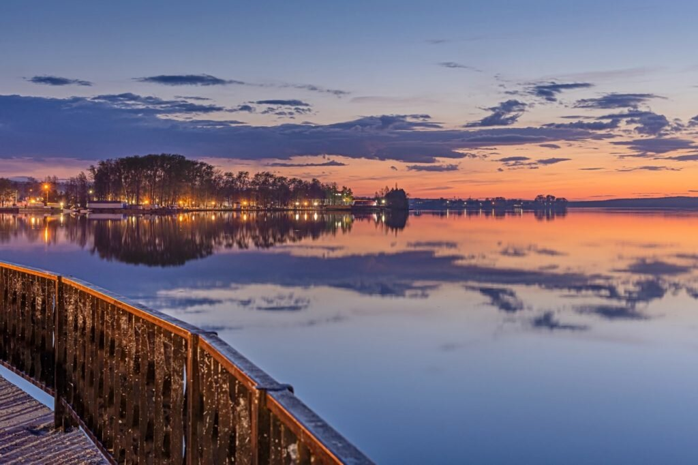
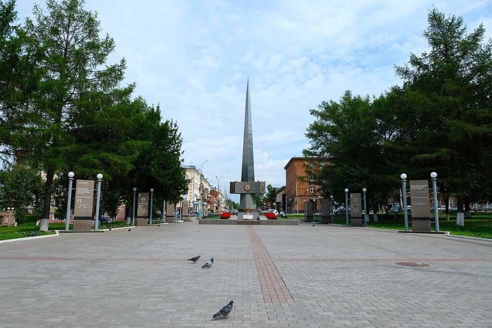
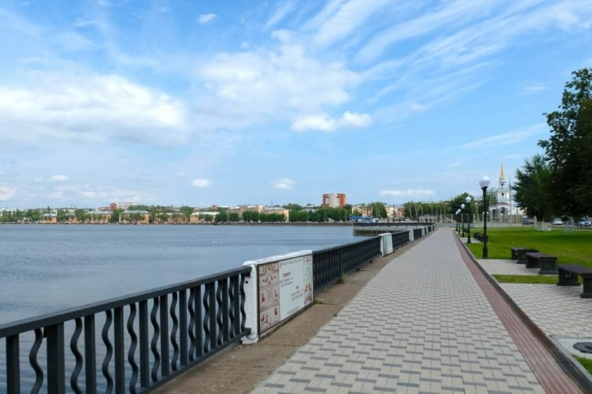
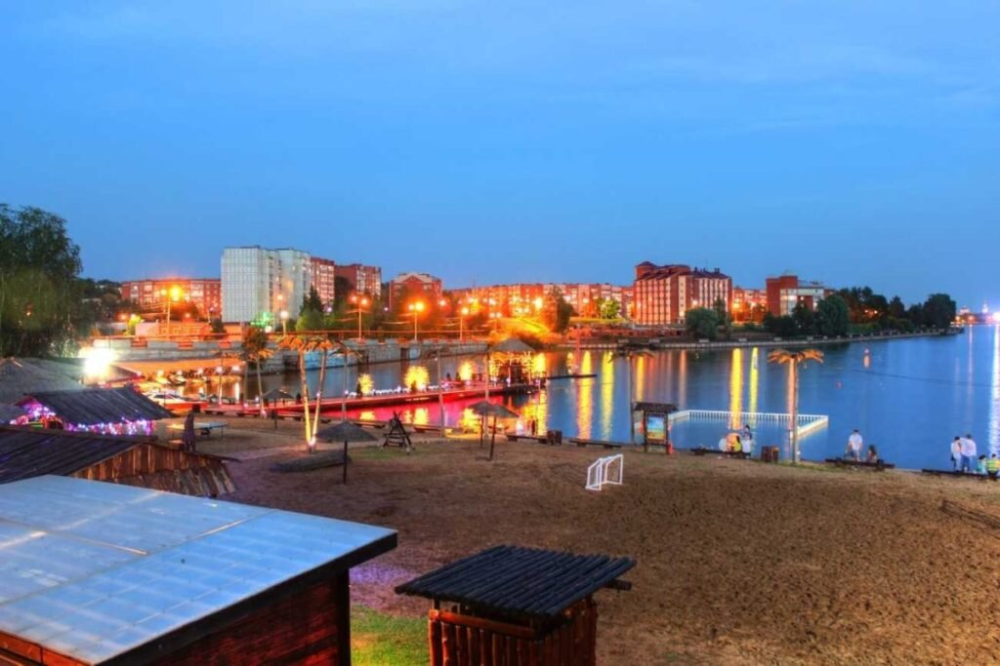
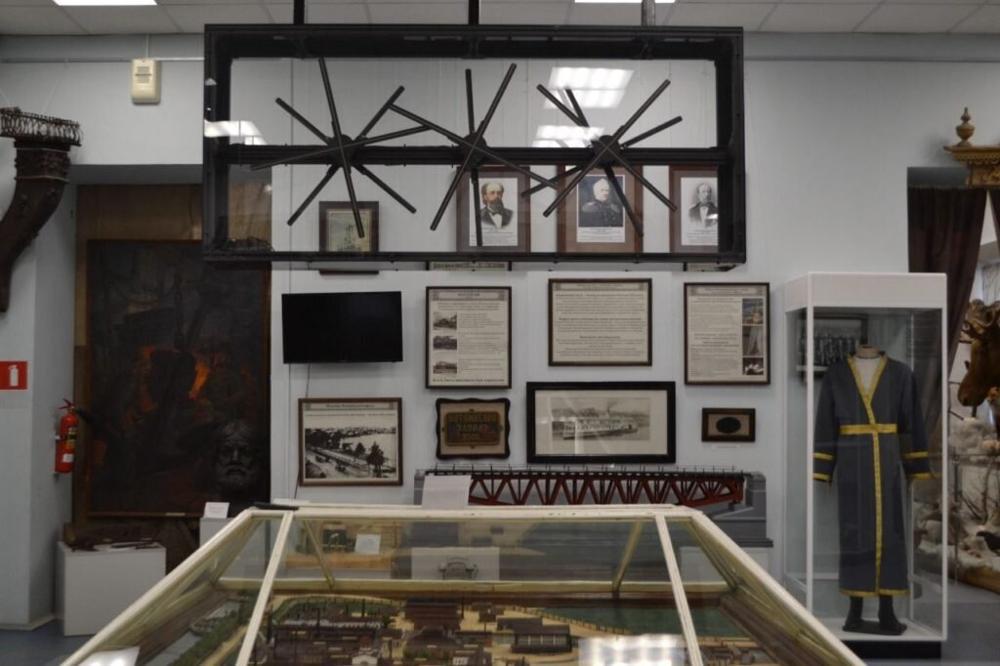
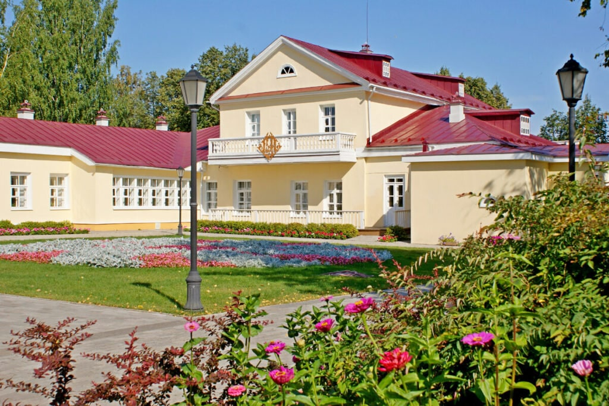
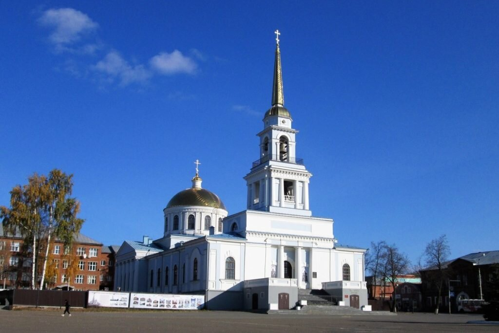
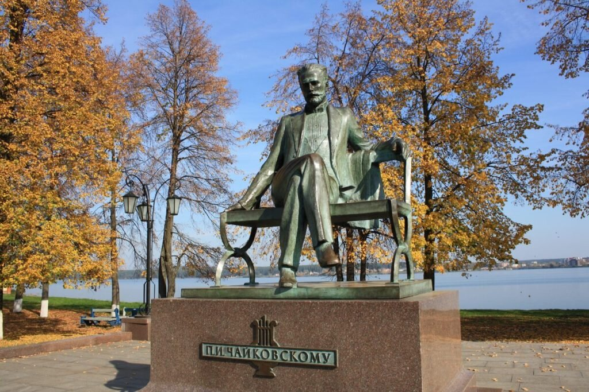

Какие достопримечательности посетить
МКПО и ВУЗЫ Удмуртии
Куда сходить погулять
Где поесть
Где остановиться
Menu
Достопримечательности Воткинска

Воткинский пруд
×

Аллея Славы
×

Набережная
×

Пляж «Остров»
×

Музей истории и культуры Воткинска
×

Музей-усадьба П. И. Чайковского
×

Благовещенский собор
×

Памятник П. И. Чайковскому
×